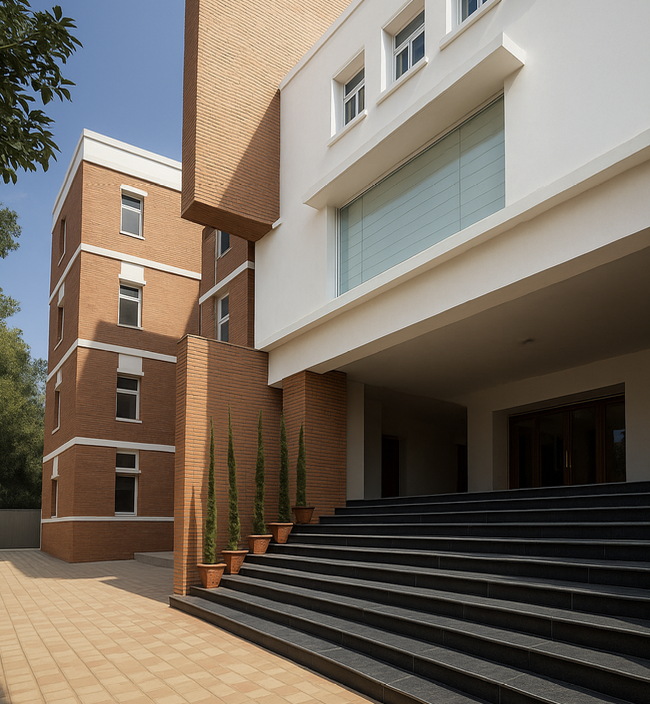
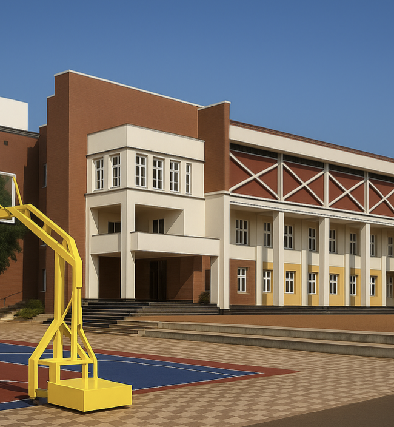

National Public School, Jalahalli

Overview
National Public School in Jalahalli, in north-west Bangalore, is a compact city school designed for 1,200 students. Its two-acre site holds a built-up area of around two lakh square feet — a far higher density than most of our campuses, and one that shaped every decision in the design.
The brief was clear from the start. The school was to be functional and understated, with a firm emphasis on academic excellence. Some of our schools are built around alternative or experimental models of learning — Montessori classrooms, incidental learning, open-ended exploration. This one was not. The client wanted a building that would support a rigorous, focused academic programme, and the architecture needed to serve that purpose directly, without distraction. The school has since come under the management of the NPS Group of Institutions, known for their strong academic focus — a natural fit for the building.
Designing an understated building is not the same as designing a plain one. Restraint has its own discipline. Without expressive gestures to rely on, the quality of a building depends entirely on getting the fundamentals right: planning, light, air and proportion. These are the things that make a school a good place to learn day after day, and they were our focus throughout.
The school was built to CBSE's affiliation norms, with classrooms of at least 500 square feet, dedicated laboratories and a library. Fitting a full CBSE senior secondary programme, with everything the board requires, onto a two-acre city site was the central planning challenge of the project, and it shaped the building's vertical organisation.
The density of the site demanded careful planning. With two lakh square feet on two acres, the school is necessarily vertical, with academic spaces stacked over several floors. We organised the building so that this arrangement stays easy to understand and move through. Staircases and circulation are clear and generous, allowing 1,200 students to move between floors at the change of periods without congestion, and each floor is laid out so that students and teachers find their way intuitively.
Daylight and ventilation were central priorities. On a compact site, classrooms can easily end up deep, dark and dependent on artificial light. We planned the building so that classrooms receive good natural light and cross-ventilation, making calm, comfortable rooms that support concentration. In Bangalore's climate, a well-ventilated classroom stays comfortable for most of the year without mechanical cooling, keeping running costs down and the learning environment healthy.
Open space is precious on a site like this, and we made the most of it. By building compactly, we freed as much ground as possible for outdoor areas where students can gather, play sport and spend breaks in the open air. Shared spaces within the building — for assembly, activities and the library — give the school community room to come together.
The materials and detailing follow the same understated approach. Finishes were chosen to be durable, practical and easy to maintain, suited to a building used intensively every day. The architecture does not call attention to itself; it provides a quiet, ordered backdrop to the life of the school.
National Public School, Jalahalli, is a reminder that not every school needs to be a statement. Sometimes the best answer to a brief is a building that does its job exceptionally well — clear in its planning, comfortable in its rooms and focused on the needs of students and teachers. On a compact urban site with a clear academic mission, that kind of disciplined, understated architecture is exactly what the school required.
Architects — Kumar & Swamy Architects, Bangalore


